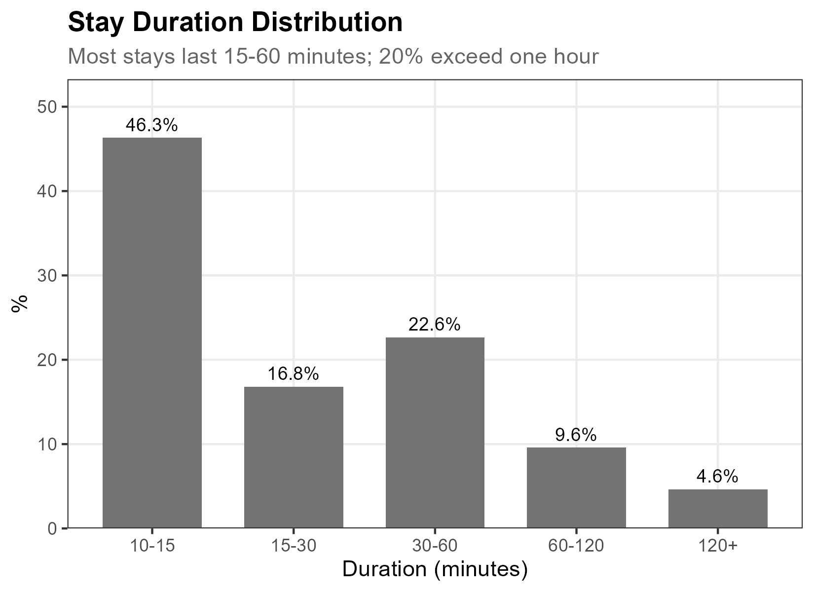
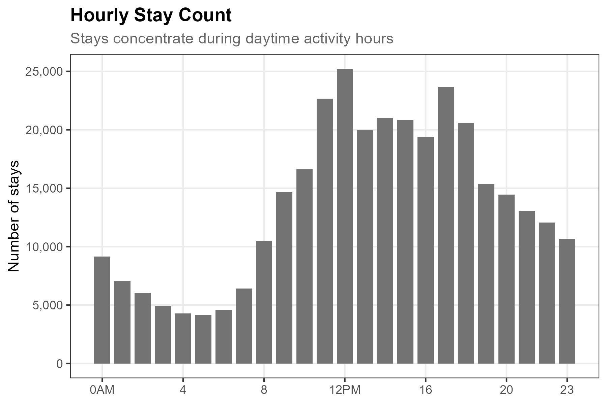
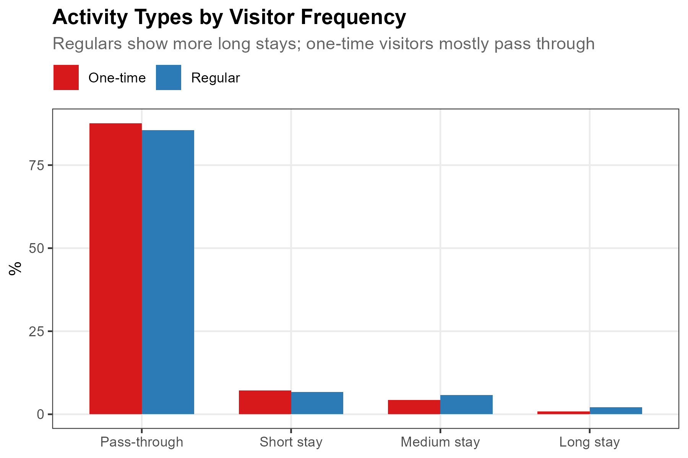

pacman::p_load(tidyverse, lubridate, arrow, sf)11 Activities
While Identity classifies who visits, Activities reveals what they do—specifically, whether they stay or pass through. This chapter detects stationary activities using spatial proximity: if consecutive detections remain within a distance threshold for 5+ minutes, we classify that segment as a “stay.”
The core insight: spatial stability signals activity. A device that lingers near the same sensors is likely engaged in stationary behavior—studying, dining, socializing. One that moves rapidly across distant sensors is passing through. By segmenting trajectories into stays and pass-throughs, we can map where activities concentrate and how they differ between visitor types.
11.1 Setup
Prepare data
This chapter uses the same dataset as Track and Identity: sample_main.zip. The ZIP contains WiFi detections from a 26-day campus deployment.
NoteAbout the sample dataset
Period: October 21 – November 15, 2019 (26 days) — spanning midterms, a campus interview event, and a school festival.
Location: UNIST campus, Ulsan, South Korea. 25 outdoor sensors covered dormitories, academic buildings, cafeteria, library, gym, and bus station.
Data structure:
| File | Rows | Columns |
|---|---|---|
wifi.parquet |
~11.4M | timestamp1, source_address, sensor_name |
sensors.gpkg |
25 | sensor_name, geom |
poi.gpkg |
5 | name, geom |
The figures in this chapter use the full 26-day dataset.
Load packages and data
Load required packages using pacman::p_load(), which installs any missing packages automatically:
Load the data files:
wifi <- read_parquet("../data/sample_main/wifi.parquet") |>
mutate(
timestamp1 = as_datetime(timestamp1),
date = as_date(timestamp1),
hour = hour(timestamp1)
) |>
filter(date >= as_date("2019-10-21"), date <= as_date("2019-11-15"))
sensors <- st_read("../data/sample_main/sensors.gpkg", quiet = TRUE)Extract sensor coordinates
For distance calculations, we need sensor coordinates in a projected CRS (meters). We transform from WGS84 to UTM zone 52N:
sensor_coords <- sensors |>
st_transform(32652) |>
mutate(
x = st_coordinates(geometry)[, 1],
y = st_coordinates(geometry)[, 2]
) |>
st_drop_geometry()
TipPreview sensor coordinates
head(sensor_coords, 5) sensor_name x y
1 bus_station 372918.5 3939761.2
2 108_front_outside 372636.4 3939590.1
3 206_front 372526.6 3939596.1
4 112_side 372482.4 3939512.7
5 104_back 372843.7 3939608.011.2 Stay Detection
WiFi trajectories consist of sequential detections across sensors. To identify stationary activities, we segment each trajectory based on spatial movement: when a device moves beyond the distance threshold between consecutive detections, we start a new segment. Segments lasting 5+ minutes are classified as “stays”—periods of stationary activity.
%%{init: {'theme': 'base', 'themeVariables': { 'primaryColor': '#e8f4f8', 'primaryTextColor': '#1a1a1a', 'primaryBorderColor': '#5c9ead', 'lineColor': '#5c9ead', 'secondaryColor': '#f0f7e6', 'tertiaryColor': '#fff5e6'}}}%%
flowchart LR
A[WiFi<br/>Detections] --> B[Segment by<br/>Spatial Movement]
B --> C{Duration<br/>>= 5 min?}
C -->|Yes| D[Stay]
C -->|No| E[Pass-through]
style A fill:#e8f4f8,stroke:#5c9ead
style D fill:#f0f7e6,stroke:#7cb342
style E fill:#fff5e6,stroke:#f9a825
Define trajectories
We first group detections into trajectories using a 30-minute gap threshold (same as Track). If a device isn’t detected for 30+ minutes, subsequent detections start a new trajectory:
gap_threshold <- 30 # minutes
trajectories <- wifi |>
arrange(source_address, timestamp1) |>
group_by(source_address) |>
mutate(
time_gap = as.numeric(difftime(timestamp1, lag(timestamp1), units = "mins")),
new_traj = is.na(time_gap) | time_gap > gap_threshold,
traj_id = cumsum(new_traj)
) |>
ungroup()Define thresholds
dist_threshold <- 150 # meters
time_threshold <- 5 # minutesWe use 150 meters as the spatial threshold—approximately the outdoor detection range of WiFi sensors—and 5 minutes as the minimum stay duration following public life study conventions (Anderson et al., 2017; Gehl & Svarre, 2013).
TipAdjusting thresholds
These values suit campus-scale deployments with ~100m sensor spacing:
| Deployment | Distance threshold | Time threshold |
|---|---|---|
| Campus (~100m spacing) | 100–150m | 5–10 min |
| Dense urban (~50m spacing) | 50–100m | 3–5 min |
| Indoor | 20–50m | 3–5 min |
| Longer activities only | 150m | 10–15 min |
The algorithm is based on Kang et al. (2005) and Li et al. (2008), who used similar time-clustering approaches for GPS stay point detection with distance thresholds of 50–200m and time thresholds of 10–30 minutes.
Calculate distances and segment
Join sensor coordinates to each detection, then calculate the distance between consecutive detections. When movement exceeds the threshold, start a new segment:
traj_with_dist <- trajectories |>
left_join(sensor_coords, by = "sensor_name") |>
group_by(source_address, traj_id) |>
arrange(timestamp1, .by_group = TRUE) |>
mutate(
x_prev = lag(x),
y_prev = lag(y),
dist = sqrt((x - x_prev)^2 + (y - y_prev)^2),
new_segment = is.na(dist) | dist > dist_threshold,
segment_id = cumsum(new_segment)
) |>
ungroup()
NoteHow segmentation works
Consider a device moving across three sensors:
Detection 1: Sensor A (x=100, y=200)
Detection 2: Sensor A (x=100, y=200) → dist = 0m → same segment
Detection 3: Sensor B (x=120, y=210) → dist = 22m → same segment
Detection 4: Sensor C (x=300, y=400) → dist = 265m → NEW segment (> 150m)
Detection 5: Sensor C (x=300, y=400) → dist = 0m → same segmentSegments 1 (detections 1–3) and 2 (detections 4–5) are evaluated separately for stay duration.
Classify stays
For each segment, calculate duration and assign the primary sensor (most frequent). Segments with duration ≥ 5 minutes are classified as stays:
stays <- traj_with_dist |>
group_by(source_address, traj_id, segment_id) |>
summarise(
start_time = min(timestamp1),
end_time = max(timestamp1),
duration_mins = as.numeric(difftime(max(timestamp1), min(timestamp1), units = "mins")),
primary_sensor = names(which.max(table(sensor_name))),
n_detections = n(),
hour = first(hour),
date = first(date),
.groups = "drop"
) |>
mutate(
is_stay = duration_mins >= time_threshold,
activity_type = case_when(
duration_mins < time_threshold ~ "Pass-through",
duration_mins < 30 ~ "Medium stay (5-30 min)",
TRUE ~ "Long stay (30+ min)"
)
)Stay detection results:
Total segments: 2,232,701
Stays (>=5min): 327,361 (14.7%)
Median stay duration: 20 minsOf 2.2 million trajectory segments, about 15% qualify as stays—periods where devices remained spatially stable for at least 5 minutes.
11.3 Behavioral Patterns
Activity type distribution
Most segments (85%) are pass-throughs—brief movements across the sensor network. Among stays, medium-duration stays (5–30 min) are most common (9.3%), with long stays (30+ min) comprising 5.4%.

NoteShow code
activity_dist <- stays |>
count(activity_type) |>
mutate(
pct = n / sum(n) * 100,
activity_type = factor(activity_type,
levels = c("Pass-through", "Medium stay (5-30 min)", "Long stay (30+ min)"))
)
ggplot(activity_dist, aes(activity_type, pct, fill = activity_type)) +
geom_col(width = 0.7) +
geom_text(aes(label = sprintf("%.1f%%", pct)), vjust = -0.5, size = 3.5) +
scale_fill_manual(values = c(
"Pass-through" = "gray55",
"Medium stay (5-30 min)" = "#f46d43",
"Long stay (30+ min)" = "#d73027"
)) +
scale_y_continuous(expand = expansion(mult = c(0, 0.15))) +
labs(
title = "Activity Type Distribution",
subtitle = "Most segments are pass-throughs; 15% involve stationary activity",
x = NULL, y = "Percentage (%)"
) +
theme_minimal() +
theme(legend.position = "none")Stay duration distribution
Among stays, most last 10–30 minutes—typical for meals, short meetings, or study sessions. About 23% last 30–60 minutes, and 14% exceed one hour, likely representing extended activities like classes or work sessions.

NoteShow code
stays_only <- stays |> filter(is_stay)
duration_bins <- stays_only |>
mutate(
duration_bin = cut(
duration_mins,
breaks = c(5, 10, 15, 30, 60, 120, Inf),
labels = c("5-10", "10-15", "15-30", "30-60", "60-120", "120+"),
right = FALSE
)
) |>
count(duration_bin) |>
mutate(pct = n / sum(n) * 100)
ggplot(duration_bins, aes(duration_bin, pct)) +
geom_col(fill = "#d73027", width = 0.7) +
geom_text(aes(label = sprintf("%.0f%%", pct)), vjust = -0.5, size = 3.5) +
scale_y_continuous(expand = expansion(mult = c(0, 0.15))) +
labs(
title = "Stay Duration Distribution",
subtitle = "Most stays last 10-30 minutes; 14% exceed one hour",
x = "Duration (minutes)", y = "Percentage (%)"
) +
theme_minimal()Temporal patterns
Stay counts follow a clear daytime pattern, peaking during midday (11 AM–2 PM) when students and staff are on campus for classes, meals, and work. Counts drop sharply overnight (0–6 AM) when campus activity is minimal.

NoteShow code
hourly_stays <- stays |>
filter(is_stay) |>
count(hour, name = "n_stays")
ggplot(hourly_stays, aes(hour, n_stays)) +
geom_col(fill = "#d73027", width = 0.8) +
scale_x_continuous(
breaks = seq(0, 23, by = 3),
labels = c("0", "3", "6", "9", "12", "15", "18", "21")
) +
scale_y_continuous(labels = scales::comma) +
labs(
title = "Hourly Stay Count",
subtitle = "Stays concentrate during daytime activity hours",
x = "Hour of Day", y = "Number of Stays"
) +
theme_minimal()Spatial patterns
Stay rates differ sharply by location. Academic buildings and dormitories show the highest stay rates (20–30%)—places where people work, study, or live. Transit points and corridors show low stay rates (5–10%)—places people pass through.

NoteShow code
sensor_activity <- stays |>
group_by(primary_sensor) |>
summarise(
n_total = n(),
n_stays = sum(is_stay),
stay_rate = mean(is_stay) * 100,
.groups = "drop"
) |>
left_join(sensor_coords, by = c("primary_sensor" = "sensor_name"))
# For mapping, transform back to WGS84
sensor_activity_sf <- sensor_activity |>
st_as_sf(coords = c("x", "y"), crs = 32652) |>
st_transform(4326)
# Extract coordinates for ggplot
sensor_activity <- sensor_activity_sf |>
mutate(
lon = st_coordinates(geometry)[, 1],
lat = st_coordinates(geometry)[, 2]
) |>
st_drop_geometry()
ggplot(sensor_activity, aes(lon, lat)) +
geom_point(aes(size = n_stays, color = stay_rate), alpha = 0.8) +
scale_size_continuous(range = c(2, 12), name = "Stay count") +
scale_color_gradient(low = "#fee08b", high = "#d73027", name = "Stay rate (%)") +
labs(
title = "Spatial Distribution of Stays",
subtitle = "Dormitory and academic sensors show highest stay rates"
) +
coord_fixed() +
theme_minimal()
NoteInterpreting spatial patterns
Stay rates reveal location function:
| Location type | Stay rate | Examples |
|---|---|---|
| Academic buildings | 25–30% | PC room, study halls |
| Dormitories | 20–25% | Residential areas |
| Dining | 15–20% | Cafeteria |
| Recreation | 10–15% | Lake, gym |
| Transit/corridors | 5–10% | Bus station, pathways |
High stay rates indicate destination locations where people spend time. Low stay rates indicate transit locations people pass through.
By visitor type
Linking stays to the Identity classification reveals expected patterns. Regulars show higher stay rates than one-time visitors, and their stays last longer.

NoteShow code
# Classify devices by visit frequency (same as Identity chapter)
device_days <- wifi |>
group_by(source_address) |>
summarise(n_days = n_distinct(date), .groups = "drop") |>
mutate(
freq_type = case_when(
n_days == 1 ~ "One-time",
n_days >= 20 ~ "Regular",
TRUE ~ "Occasional"
)
)
# Join frequency type to stays
stays_with_freq <- stays |>
left_join(
device_days |> select(source_address, freq_type),
by = "source_address"
) |>
filter(freq_type %in% c("One-time", "Regular"))
# Calculate activity distribution by frequency type
activity_by_freq <- stays_with_freq |>
count(freq_type, activity_type) |>
group_by(freq_type) |>
mutate(pct = n / sum(n) * 100) |>
ungroup() |>
mutate(
activity_type = factor(activity_type,
levels = c("Pass-through", "Medium stay (5-30 min)", "Long stay (30+ min)"))
)
ggplot(activity_by_freq, aes(activity_type, pct, fill = freq_type)) +
geom_col(position = "dodge", width = 0.7) +
scale_fill_manual(
values = c("One-time" = "#d7191c", "Regular" = "#2c7bb6"),
name = NULL
) +
labs(
title = "Activity Types by Visitor Frequency",
subtitle = "Regulars show more long stays; one-time visitors mostly pass through",
x = NULL, y = "Percentage (%)"
) +
theme_minimal() +
theme(legend.position = "top")
NoteInterpreting visitor patterns
| Metric | One-time | Regular |
|---|---|---|
| Pass-through rate | 88% | 85% |
| Medium stay (5–30 min) | 9% | 9% |
| Long stay (30+ min) | 3% | 6% |
| Median stay duration | 10 min | 20 min |
Regulars (campus residents, staff) engage in more extended activities—they know the space and have reasons to linger. One-time visitors are predominantly transiting—they arrive, accomplish a brief task, and leave.
This pattern is consistent with the spatial findings in Identity: regulars concentrate at dormitories and dining halls; one-time visitors cluster at transit points.
11.4 Summary
Stay detection segments WiFi trajectories into stationary activities and pass-throughs based on spatial stability. The key parameters are:
| Parameter | Default | Rationale |
|---|---|---|
| Gap threshold | 30 min | Separates distinct trajectories |
| Distance threshold | 150 m | Approximates sensor detection range |
| Time threshold | 5 min | Public life study convention |
The method reveals:
- Where activities concentrate (academic buildings, dormitories > transit points)
- When activities occur (daytime peak, overnight minimum)
- Who stays longer (regulars > one-time visitors)
WarningLimitations
Stay detection accuracy depends on sensor density and probe request frequency. In sparse sensor networks, short stays between sensors may be misclassified as pass-throughs. The 150m distance threshold assumes ~100m sensor spacing; adjust for your deployment.
For validation approaches using GPS ground truth, see Kang et al. (2005) and Li et al. (2008).